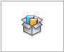

Share documents from a folder location or .zip file
Using the Pack and Go command, you can package documents so you can share them from a folder location or .zip file.
Pack and Go is on by default, but you can use SEAdmin.exe to inactivate it. For more information, see Disable Pack and Go.
Solid Edge uses the default zip creation process provided by Windows. If trying to zip files containing Unicode characters in their names, the zipping process might fail. If the offending characters are from a language other than English but one Microsoft supports, you can install the relevant MUI (Multilingual User Interface) language pack from Windows Update or the relevant LIP (Language Interface Pack). You may also have to change your System Locale. For additional solutions, see the Microsoft support site.
-
You can share documents using the Pack and Go command as follows.
-
In Solid Edge:
-
Open the document you want to share.
-
Choose File menu→Share→Pack and Go

.Note:The Pack and Go command is available only when you have a document open.
-
-
In Design Manager:
-
Open the document you want to share.
-
In the document list, click the Current Filename cell for the document of interest.
-
Choose Home tab→Assistant group→Pack and Go
 .Note:
.Note:-
If you have several documents open, Design Manager displays the Pack and Go dialog box for the active document.
-
If you save documents that have a status of Released
 , Design Manager saves the files with a status of Available
, Design Manager saves the files with a status of Available  .
.
-
-
-
In Windows File Explorer:
-
Browse File Explorer for the document you want to share.
-
Right-click the document and choose Pack and Go.
-
Note:In the Pack and Go dialog box, clicking any document name displays a graphical preview of the document.
-
-
(Optional) Specify what additional documents you want to include, using the Include Drawings and Include Simulation Results check boxes.
If you select either of these options, the system copies all related drawings or simulations to the folder location or the zip file, as you specify.
-
Specify the structure of the saved documents using the following check boxes:
-
Copy all files to single folder
Use this option if you want to copy all related files from their various locations to a single location, as shown in the New Location column.
-
Maintain folder structure
Use this option if you want to replicate the file locations shown in the Current Location column to the location shown in the New Location column. The system creates subfolders in the new location, similar to where they reside in the current location.
-
-
Specify if you want to display the documents in a list view or BOM view, using the No levels or BOM view check boxes.
-
Specify where you want to save the documents, using the Save to folder or Save to zip file check boxes.
-
Click Save.
Example:
The system displays a Windows Explorer window with the location where you saved the files.
Note:If you are not a Solid Edge data management user, and selected the Include Drawings option, the system displays the Where Used dialog box. In this dialog box, define the search scope. The system includes in the document package all drawings found at the location defined in the search scope.